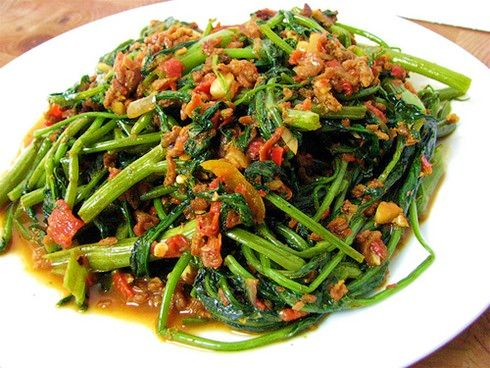

Sambal Kangkong
Sambal Kangkong

Sambal Kangkong is a dish consisting of stir-frying the vegetable with aromatic sambal chilli which constitutes, chilli, dried shrimps, shallots/onions and other spices.
Reference Recipe: Link
Ingredients
250g kangkong
10g dried shrimp
3 tbsp hot water
1 tbsp + 1 tbsp cooking oil divided
1 finger-length red chilli sliced to thin sections
1 chilli padi sliced to thin sections for extra heat (only if needed)
3 cloves garlic finely chopped
4 shallots (or 1/4 small red onion) sliced thinly
1 1/2 tbsp sambal belacan paste instant or home-made; to taste
tiny pinch of salt (to taste)
2-3 tbsp water (add more as needed)
1 tbsp Chinese wine (Hua Tiao/Shaoxing)
Steps:
- Prepare kangkong. Using kitchen scissors, snipe & separate the kangkong leaves from the stems. Wash and dry the kangkong.
- Prepare dried shrimps. Soak dried shrimps in a small dish with hot water until softened, about 20 minutes.
Reserve and set aside the dried shrimps soaking water.
- Prepared grinded spices. Add softened dried shrimps, garlic and shallots to an electric food grinder or blender. Add 1 tbsp oil and pulse for a few seconds.
Alternatively, pound the ingredients in a mortar & pestle or finely chop them.
- Stir-fry the dish. Heat remaining oil in a wokpan. Stir-fry grinded spices for briefly until fragrant.
Add kangkong stems and stir fry briskly on high heat until softened.
Add kangkong leaves and dried shrimp soaking liquid. Stir fry until the leaves are reduced in volume. Then add sambal belacan paste, chillis, salt and water.
Drizzle Chinese wine along the sides of the wok walls during the last 10 seconds of cooking. Stir to coat well before serving.
To return to main directory, click here